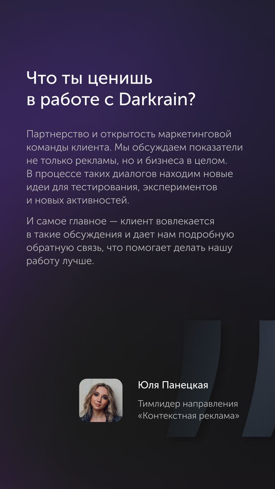
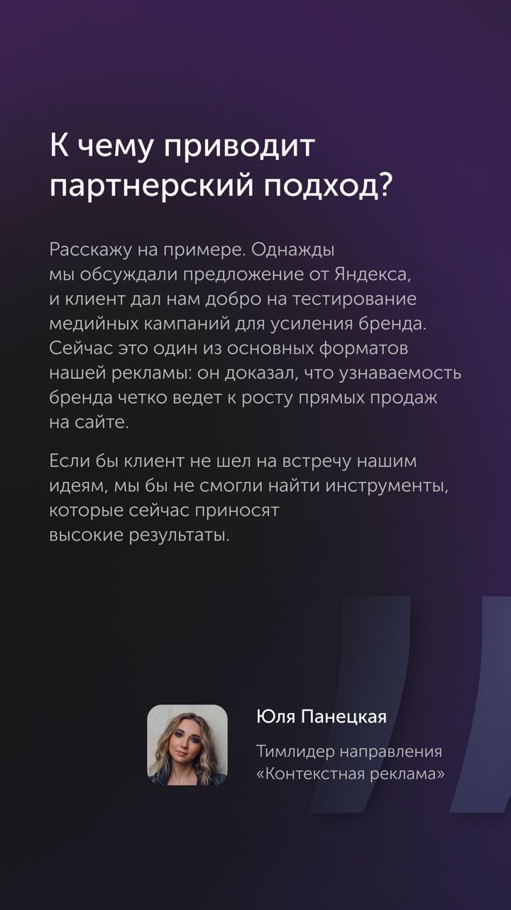
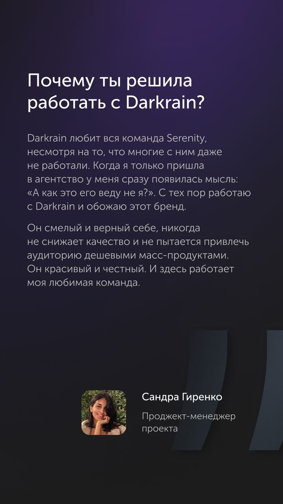
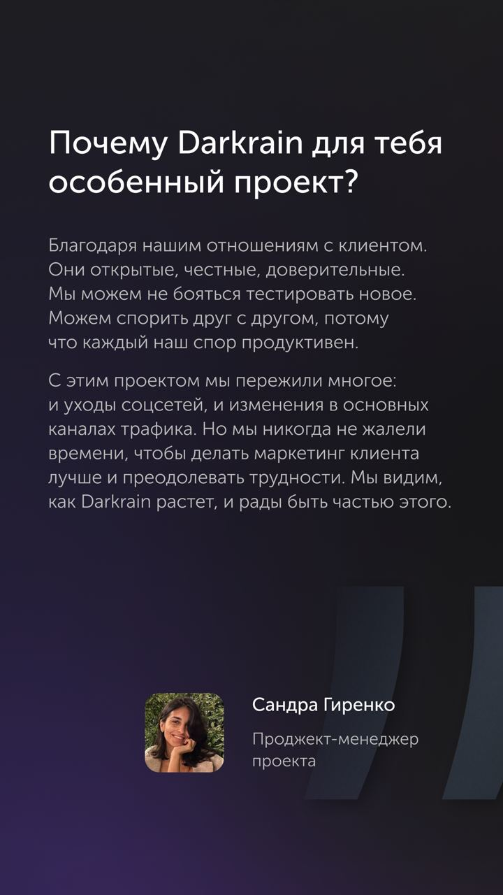
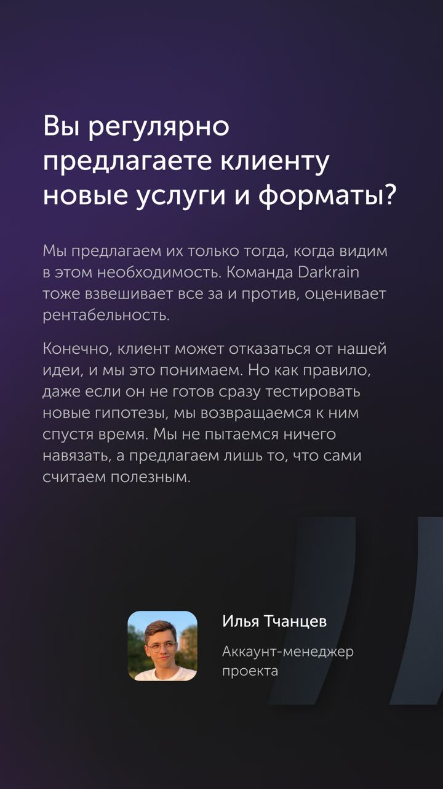
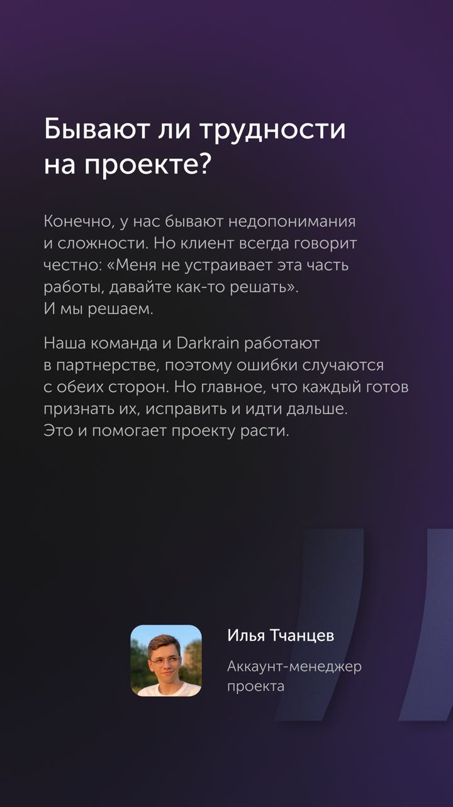

В завершение разговора о Darkrain, делюсь интервью с нашей командой, которая ежедневно работает над проектом.
Ребята рассказали, почему Darkrain — это особенный проект, как у нас строится внутреннее взаимодействие с командой заказчика и почему мы считаем этот бренд крутым.
Читайте наш разговор в карточках.
А чтобы подробнее узнать про этот кейс, переходите к предыдущим постам:
— 1/5, история нашей работы с Darkrain
— 2/5, как мы справляемся со сложностями и неудачами
— 3/5, что помогает нам достигать крутых результатов
— 4/5, принципы, которые помогают сотрудничать с клиентом многие годы
Познакомиться с результатами нашей работы можно в кейсе.